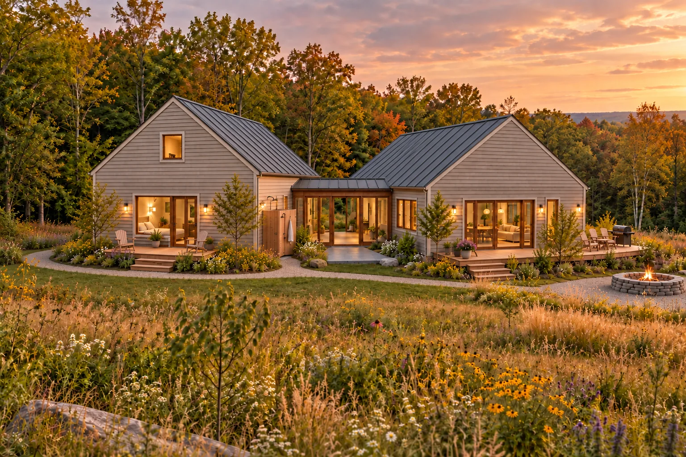
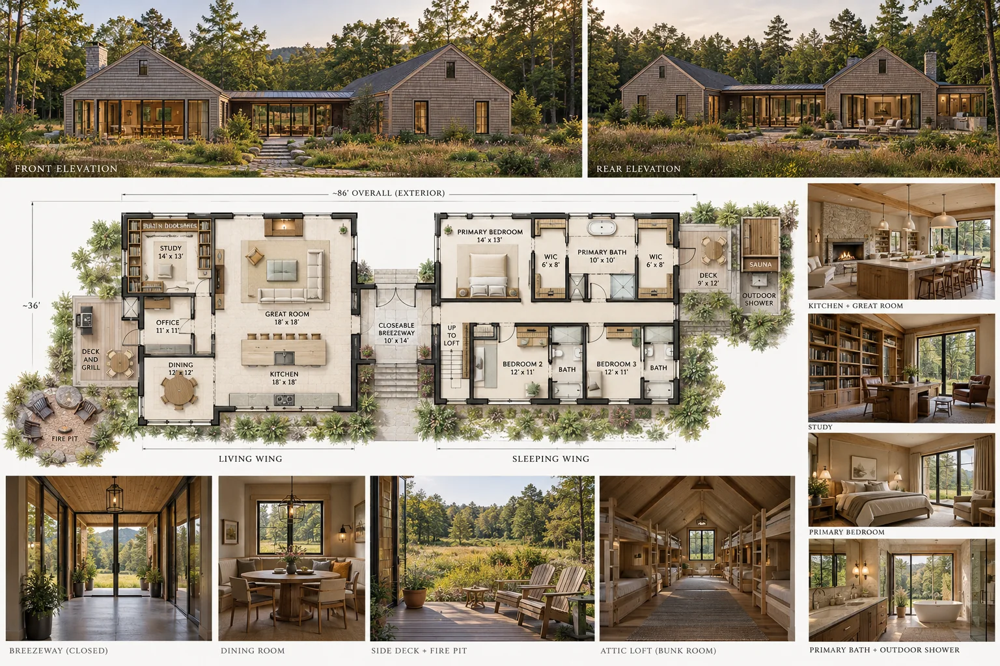
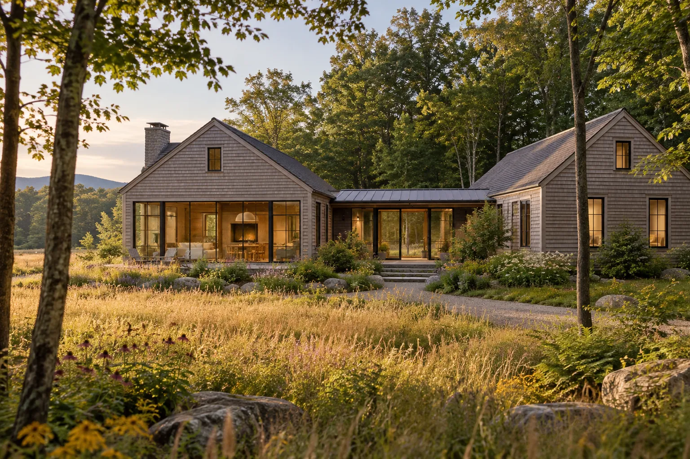
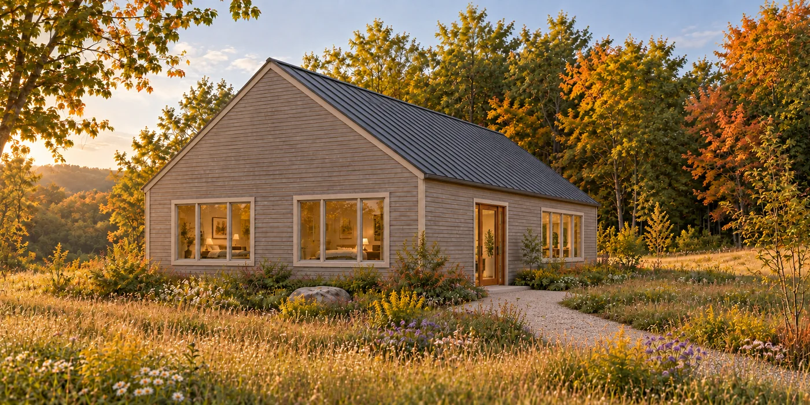
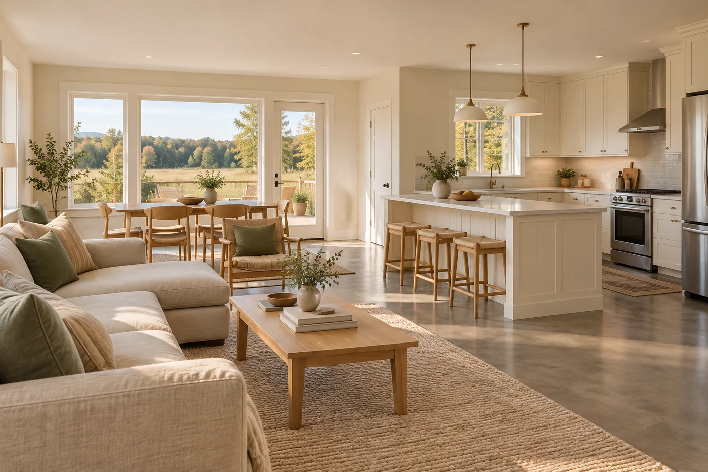
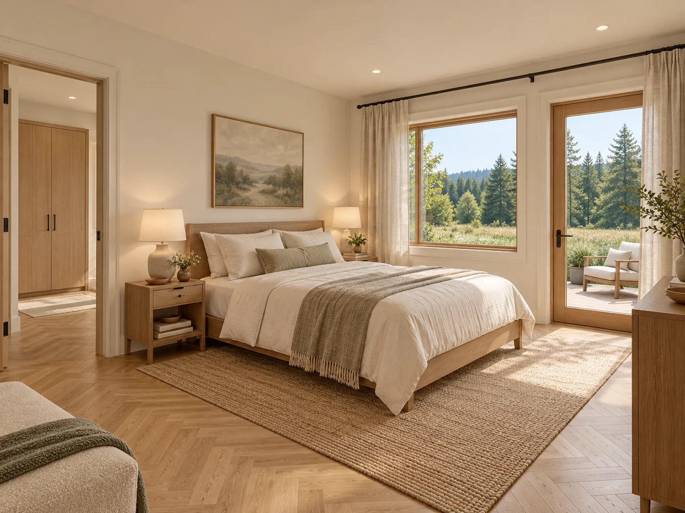
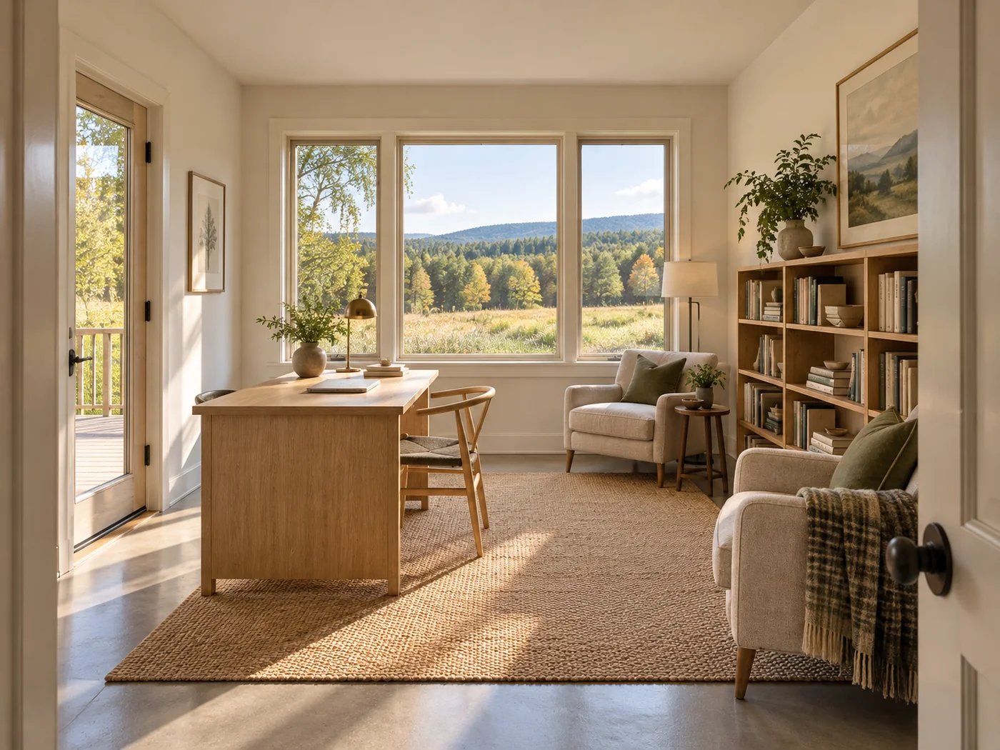

Forever finishes
Buy once. A standing seam metal roof. Vertical wood siding, unfinished. Polished concrete underfoot, and herringbone wood in a few rooms. Walls with a texture that does not ask to be repainted.
House project
About 2,000 square feet at the edge of a meadow. A living wing and a sleeping wing, joined by a breezeway that can close to the weather.

Vermont
About 2,000 square feet
Two wings, one breezeway
Schematic design
The idea
I grew up in Vermont, and I am drawing my way back. This is the drawing I keep returning to. It has to work as a getaway and as a home, and it has to look like the same house in both roles.
The shapes are old New England ones. A Cape roof. The plainness of a First Period house. Gables that face the person walking up. A simple building with more window than wall, set low in the grass.
Two roofs. One front door. A short walk of weather between them.
The dog trot
A dog trot is two small houses with a passage between them. In a hot climate that passage stays open and pulls air through. Here the passage is the front door, and it has to be able to shut.
The living wing holds the kitchen, the great room, and a room for work. The sleeping wing holds the bedrooms. The walk from the table to bed crosses the breezeway, a few steps that still feel a little like outside.
The living wing can stand on its own. The sleeping wing is drawn so it can be added later, without taking the first part apart. The two gables stay similar, so the finished house reads as one idea.

Floor plan
This board is a concept study. It shows the front, the rear, the closable breezeway, and how the rooms sit in each wing. It is a direction for schematic design, not a construction set. The target is still about 2,000 square feet. The drawing gets tested and tightened before anything is built.

Design principles
Buy once. A standing seam metal roof. Vertical wood siding, unfinished. Polished concrete underfoot, and herringbone wood in a few rooms. Walls with a texture that does not ask to be repainted.
Big windows, and not much competing with them. The meadow and the tree line do the decorating. Rooms stay plain so the glass can work.
Nothing on the outside that depends on a coat of paint. The siding is meant to go gray. The roof is meant to darken. In ten years the house should sit closer to the hillside than it does on the day it is built.
A heat pump for heating and cooling. Radiant warmth in the floors. The concrete slab stores the day and lets it go slowly. Two simple roofs, so the shape stays as disciplined as the plan.
Gallery
Exterior views, the rooms, and the living wing on its own. These pictures are a way to look at the idea. Schematic design is what turns them into a building.





Where it stands
The renderings and the plan study are enough to start a real conversation with an architect. They are not a permit set, and they are not the last word on the dimensions.